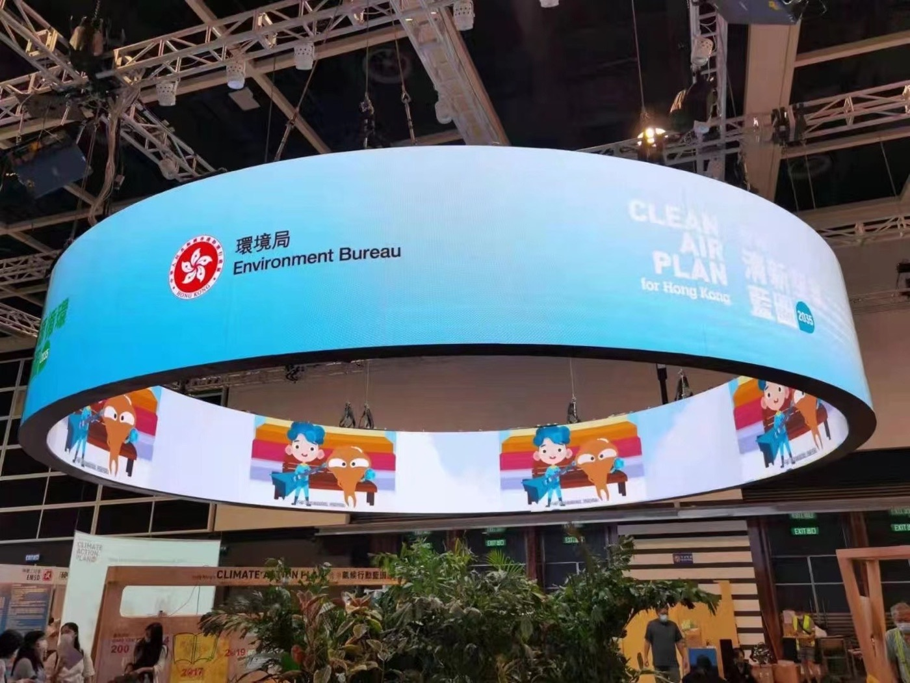
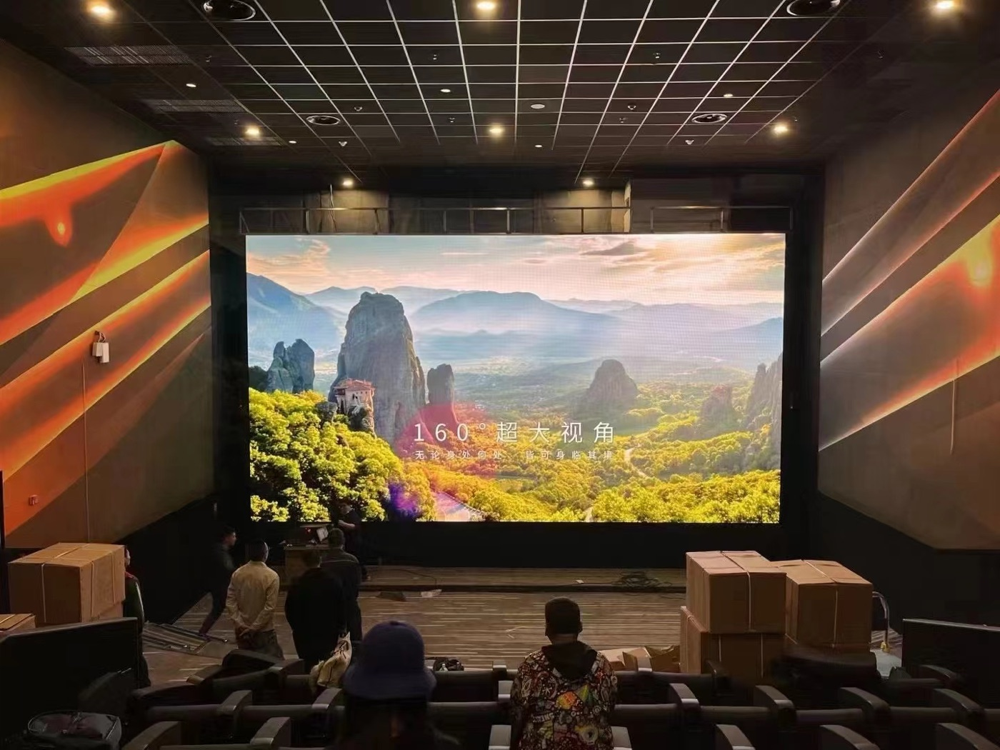
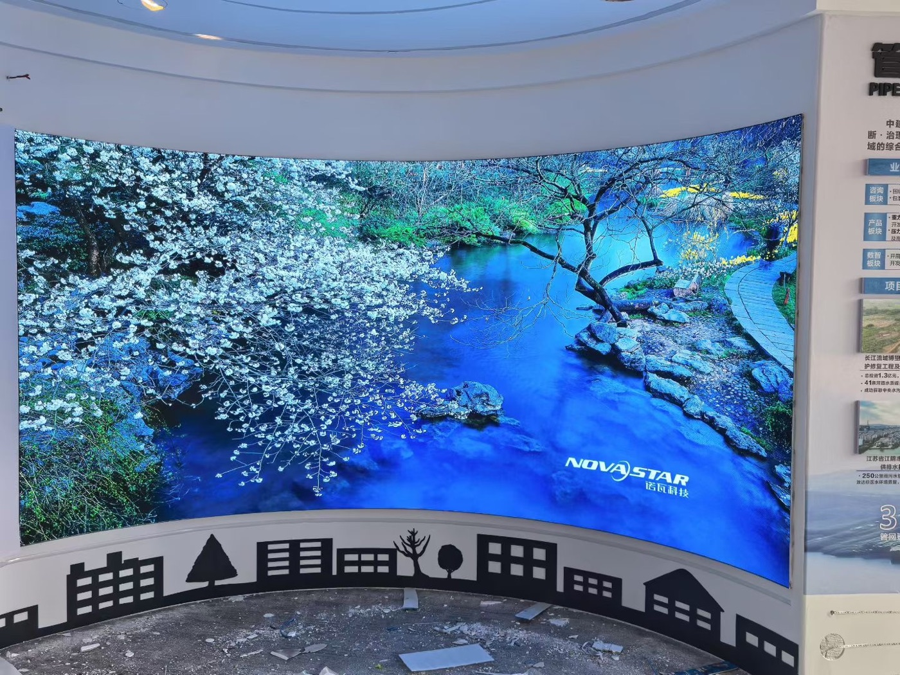

A creative LED display is any screen that is not a flat rectangle. That covers a wide family: a sphere that turns inside a shopping centre, a column wrapped in a continuous ribbon of light, a cube hanging above a stage, a wave-shaped wall behind a reception desk, or a screen cut to follow a building's curve. The technology is the same LED and driver stack found in a normal wall, but the geometry, the cabinets, and the content all change.
The commercial logic is attention. In a saturated visual environment a rectangular screen reads as advertising, while an unexpected shape reads as an object. A rotating LED globe in an atrium draws a phone camera where a flat sign would not, and that difference in dwell time is why brands and venues keep commissioning shaped installs.
Creative screens are also a way to fit a display into architecture that refuses to cooperate. A heritage column, a curved facade, or a ceiling void will not accept a rectangular cabinet, but flexible modules and custom frames can follow the surface. The screen becomes part of the building rather than a panel bolted onto it.
What makes these projects hard is that nothing is standard. Each shape needs its own cabinet design, its own pixel map, and its own content treatment. The result is bespoke engineering, and the planning and content work often outweighs the hardware cost.
This guide covers the main creative formats, how mapping and content are handled, and what to plan for structurally before a shaped screen is ordered.

On a rectangular wall, the video signal maps straight onto the pixels. On a creative shape it does not, and the mapping problem is the heart of the project. The control system has to know that cabinet seven in the stream corresponds to a specific patch of the sphere, and the content has to be authored so that a flat video becomes a correct image once wrapped onto that surface.
Content for curved and spherical screens is usually produced as a flat canvas that is then warped, either in the media server or by the creative studio. A sphere needs a map that expands the top and bottom, much like a flat map of the globe, so that circles stay circular once wrapped. A cylinder needs a horizontal repeat that closes seamlessly at the join.
The pixel resolution is rarely uniform. A sphere has fewer modules near the poles if built from flat tiles, and more if built from tapered pieces, so brightness and content density vary across the surface. Designers usually keep logos and text near the equator, where the pixel density is highest and distortion is lowest.
Seamless joins are the visible proof of quality. Where two modules meet on a curve, any hue or brightness step shows immediately because the eye follows the line. Per-cabinet calibration that corrects the whole surface, not just each cabinet in isolation, is what hides those joins.
Testing has to happen before fabrication is locked. A content preview rendered onto a 3D model of the exact shape reveals which logos distort and which motion reads well, at a stage when the design can still change cheaply.
| Shape | Typical Build | Content Challenge | Best For |
|---|---|---|---|
| Sphere and globe | Tapered or tiled modules on a sphere frame | Polar distortion and uneven density | Atrium centrepieces and brand icons |
| Cylinder and column | Flexible modules or narrow curved cabinets | Seamless horizontal wrap at the join | Pillars, kiosks, and lobby columns |
| Cube and box | Flat cabinets on a rigid frame | Faces must sync as one object | Hanging stage and exhibition features |
| Ribbon and wave | Flexible modules on a bent rail | Smooth gradients along the curve | Reception walls and retail backdrops |
| Cut-to-shape flat screen | Custom cabinets in a bespoke outline | Edges must follow the design exactly | Brand walls and shaped signage |

Two construction routes dominate creative work. Flexible modules, built on a pliable substrate, can bend to follow a curve within a stated minimum radius. Custom rigid cabinets are machined to a specific shape with a fixed angle between faces. Most complex installs use both, with flexible pieces on the curves and rigid cabinets on the flats.
The minimum bend radius is the key specification for flexible modules. Exceed it and the modules crack or the LEDs pop off, so the design radius must be checked against the product's rated figure at the very start. A design that assumes tighter curvature than the hardware allows cannot be rescued later without rebuilding the shape.
Custom cabinets carry their own issues. Each unique cabinet needs a drawing, a jig, and a separate production run, which raises cost and lead time compared with a standard rectangle. Where the budget is tight, designers often approximate a curve with a series of small flat cabinets, accepting a faint faceted look in exchange for standard parts.
Rigging is where creative screens become an engineering project. A hanging sphere or cube needs a frame rated for its own weight plus dynamic load, and the attachment to the structure above must be signed off. Freestanding shapes need a base heavy enough to resist being pushed, and a service route so that modules can be reached without dismantling the whole object.
Service planning is easy to forget on a shape. On a curved wall, a failed module behind a fixed trim may be unreachable. Designers now plan a service strategy for the whole object, not just the flat sections, so that one fault does not require the sphere to be taken down.
| Module Type | Minimum Radius | Pitch Range | Note |
|---|---|---|---|
| Flexible soft module | About 1.5 - 3 m depending on pitch | P2.5 - P10 | Follows gentle curves and columns |
| Flexible high-flex module | Tighter, down to about 0.5 m | P4 - P10 | For spheres and strong curvature |
| Standard rigid cabinet | Flat only | P0.9 - P10 | Used on flat faces of a shape |
| Custom angled cabinet | Fixed facet angle | P2.6 - P10 | Machined for a specific design |
| Transparent module | Flat or gently curved | P3.9 - P10 | Keeps sightlines through the object |

A shaped screen weighs more than its pixel area suggests because the frame has to hold the form rigidly. A sphere or a wave wall carries a bespoke steel structure, and that structure is often the largest single cost in the project. Getting a structural engineer involved before the shape is final prevents the design from being value-engineered into something that sags.
Access for service shapes the design as much as the structure. A ceiling-hung cube needs a way to lower it or a walkway behind it; a column wrap needs removable bands; a wall ribbon needs front-serviceable modules. Every creative install should have a documented method for replacing a module written down before the object is assembled, because on-site improvisation on a curved surface is slow and risky.
Thermal management is more demanding on a closed shape than on a flat wall. A sphere or cube traps heat inside, so the internal airflow path and any fans must be designed in, with temperature monitoring to catch a fan failure before it cooks a section of modules.
Content refresh keeps the object interesting. A shaped screen that plays the same loop for a year becomes invisible, so operators schedule new creative on a cycle, keeping a simple fallback loop for gaps. Because the content is warped to the shape, the studio needs the mapping file and the exact geometry to produce each new piece, which is why that file belongs in the operator's documentation pack.
Finally, treat the object as a long-term asset. Store the cabinet map, the mapping file, the structural drawings, and the spare-module list together, so that a decade later a technician can still service a bespoke screen whose designer has long since moved on.
Asia Vision Technology builds flexible and custom LED modules for shaped installations, including soft modules for curved columns and ribbons and machined cabinets for bespoke outlines. Our indoor CV-PRO platform supports the fine pitch that keeps distortion low on small, close-viewed objects.
Displays carry CE, FCC, and RoHS certification and ship in 15 to 20 working days with a 3-year warranty. We supply cabinet maps, minimum bend radius data, and weight and load figures early, so designers can confirm a shape is buildable before the creative is locked.

For this requirement our range covers it directly: the COB Z rental series (7680Hz flip-chip) and the COB ZH touring series (sealed, wind-rated).
Related reading: LED display distribution in Saudi